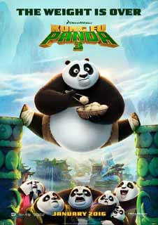
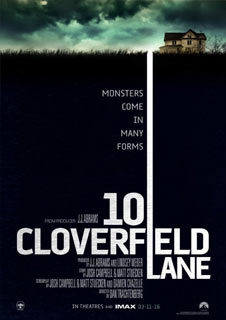

Main Street, Swinford, Co. Mayo, 09492515551
Alvin and the Chipmunks: The Road ChipThrough a series of misunderstandings, Alvin, Simon and Theodore come to believe that Dave is going to propose to his new girlfriend in New York City... and dump them. They have three days to get to him and stop the proposal, saving themselves not only from losing Dave but possibly from gaining a terrible stepbrother. | |
|  | Kung Fu Panda 3In 2016, one of the most successful animated franchises in the world returns with its biggest comedy adventure yet, KUNG FU PANDA 3. When Po's long-lost panda father suddenly reappears, the reunited duo travels to a secret panda paradise to meet scores of hilarious new panda characters. But when the supernatural villain Kai begins to sweep across China defeating all the kung fu masters, Po must do the impossible -- learn to train a village full of his fun-loving, clumsy brethren to become the ultimate band of Kung Fu Pandas! |
BATMAN V SUPERMAN: DAWN OF JUSTICEFearing the actions of Superman are left unchecked, Batman takes on Superman, while the world wrestles with what kind of a hero it really needs. With Batman and Superman fighting each other, a new threat, Doomsday, is created by Lex Luthor. It's up to Superman and Batman to set aside their differences along with Wonder Woman to stop Lex Luthor and Doomsday from destroying Metropolis. |
|
Sing StreetSING STREET takes us back to 1980s Dublin seen through the eyes of a 14-year-old boy named Conor (Ferdia Walsh-Peelo) who is looking for a break from a home strained by his parents' relationship and money troubles, while trying to adjust to his new inner-city public school where the kids are rough and the teachers are rougher. He finds a glimmer of hope in the mysterious, über-cool and beautiful Raphina (Lucy Boynton), and with the aim of winning her heart he invites her to star in his band’s music videos. There’s only one problem: he’s not part of a band…yet. She agrees, and now Conor must deliver what he’s promised - calling himself "Cosmo" and immersing himself in the vibrant rock music trends of the decade, he forms a band with a few lads, and the group pours their heart into writing lyrics and shooting videos. Inspired by writer/director John Carney's (ONCE, BEGIN AGAIN) life and love for music, SING STREET shows us a world where music has the power to take us away from the turmoil |
|
|  | 10 Cloverfield LaneA young woman wakes up after a terrible accident to find that she's locked in a cellar with a doomsday prepper, who insists that he saved her life and that the world outside is uninhabitable following an apocalyptic catastrophe. Uncertain what to believe, the woman soon determines that she must escape at any cost. |